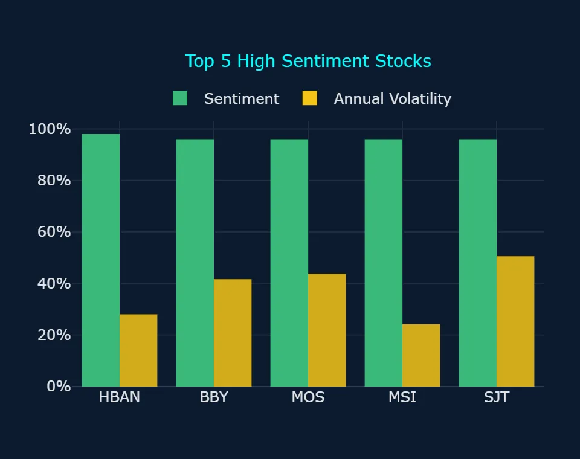
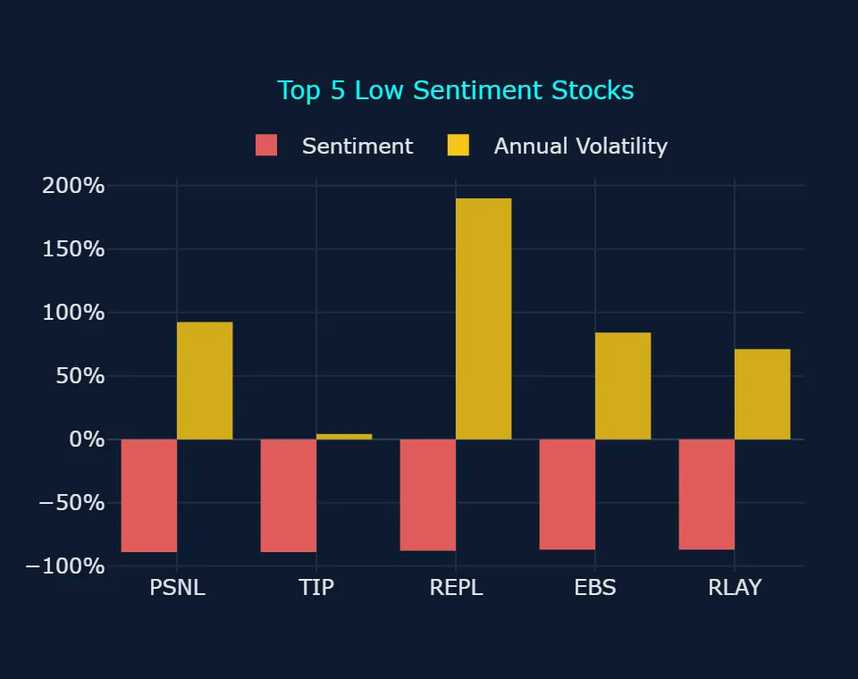
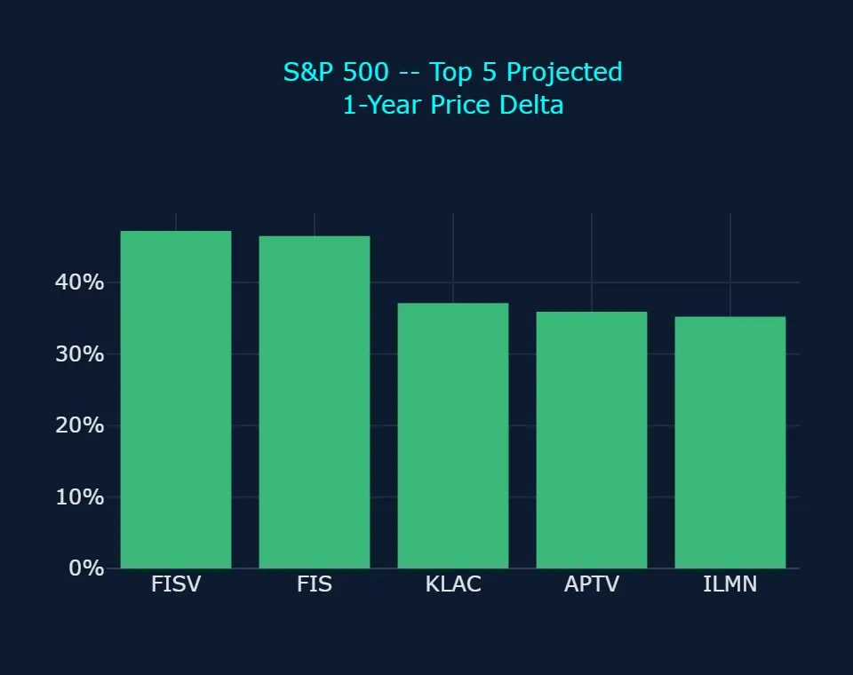
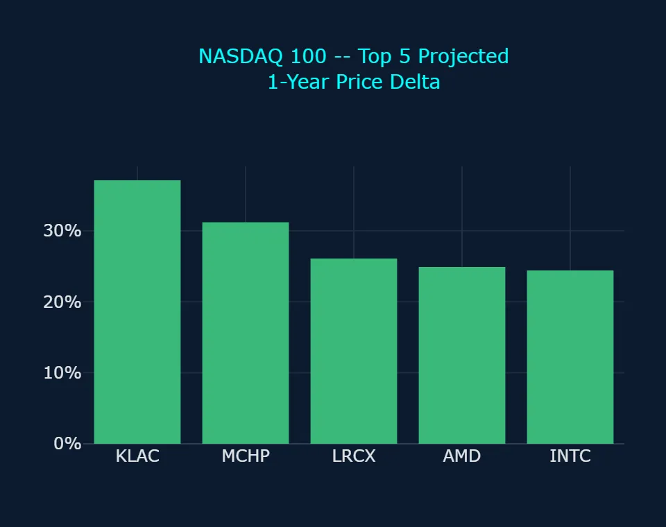
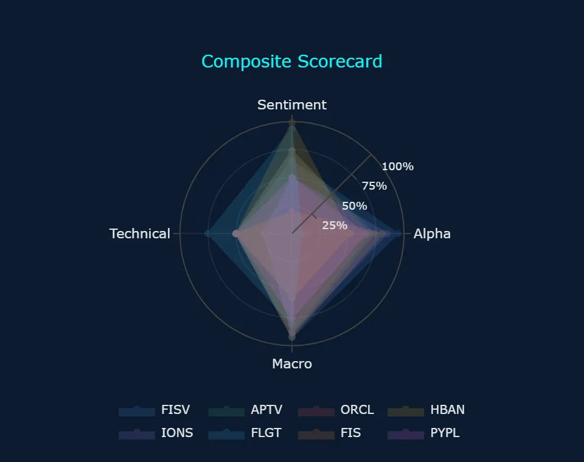
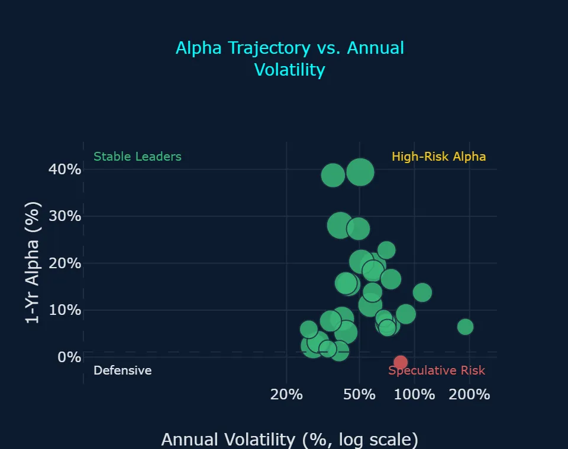
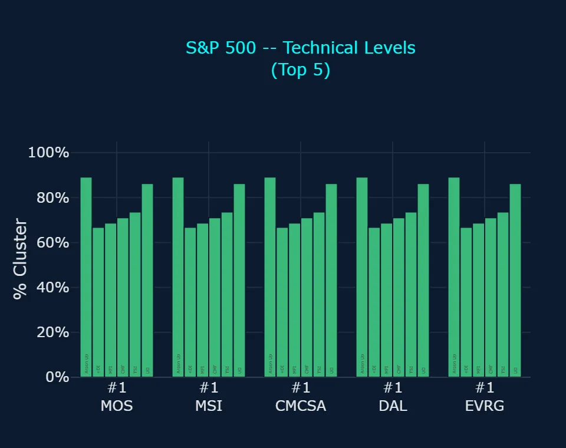
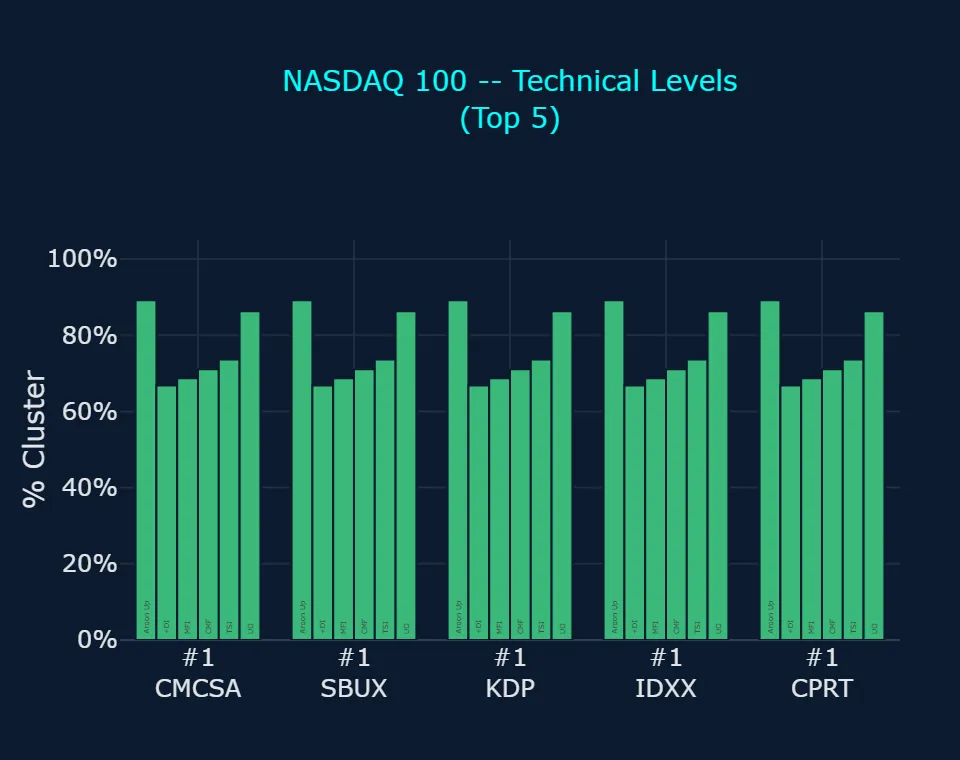
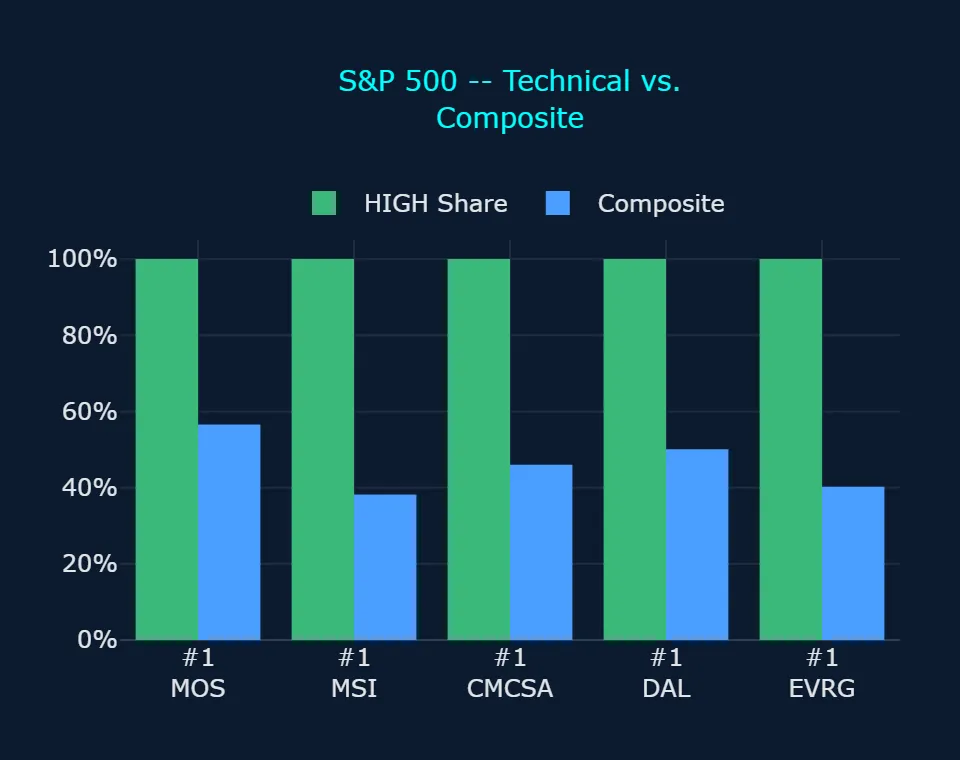
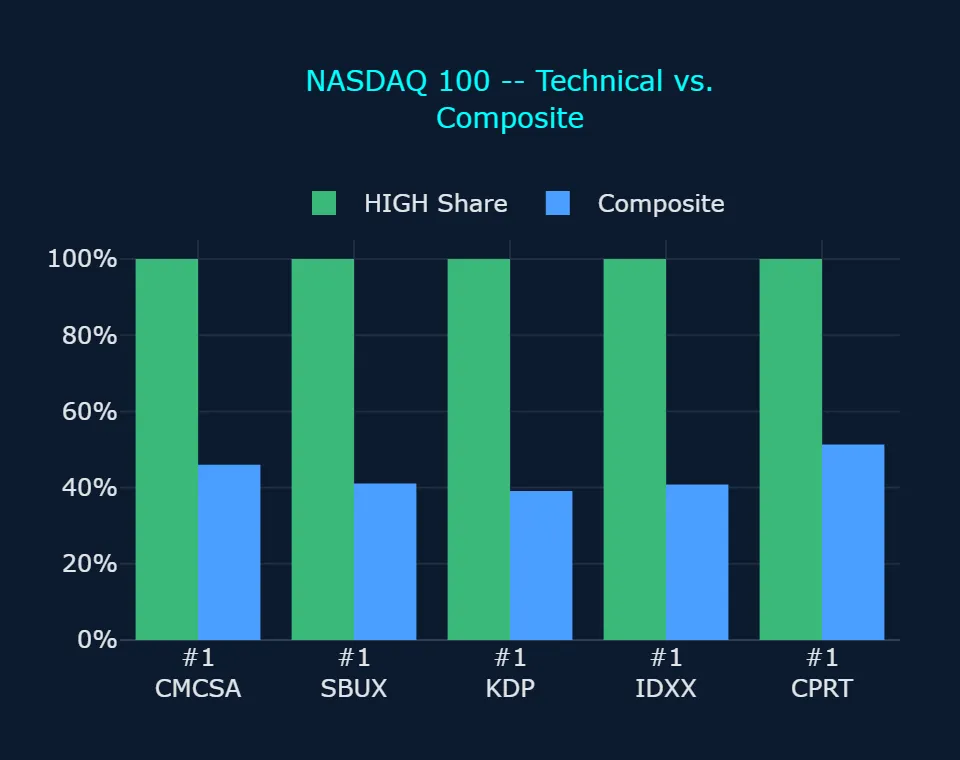

Zoonova AI: Pre-Market Quantitative Briefing – November 11, 2026
Session Quantitative Briefing: The Zoonova AI Intelligence Engine executes a hybrid architecture combining a proprietary Quad-Ensemble machine learning framework with Google Gemini Flash for real-time contextual synthesis and semantic macroeconomic grounding. The quantitative pipeline integrates four specialized estimators: Random Forest Regressor (RFR) for baseline structural stability, eXtreme Gradient Boosting (XGB) optimized for residual loss minimization, Categorical Boosting (CAT) for high-cardinality categorical signal processing, and Temporal Fusion Transformer (TFT) for multi-horizon price and volatility forecasting.
Zoonova AI: Pre-Market Momentum & Liquidity Report
1. QUANTITATIVE MODEL OVERVIEW & SIGNAL METRICS
Zoonova's predictive architecture integrates a Quad-Ensemble framework combining Random Forest Regressor [RFR], eXtreme Gradient Boosting [XGB], Categorical Boosting [CAT], and Temporal Fusion Transformer [TFT] algorithms to generate multi-horizon price targets and alpha probabilities. Sentiment scoring is processed using VADER natural language sentiment analysis across real-time news and market feeds. Systemic regime shifts, co-movement anomalies, and market breadth distributions are modeled and clustered via BIRCH clustering.
- Benchmark dispersion shows Invesco QQQ Trust Series 1 (QQQ) projecting the highest long-term trajectory with an implied 1-year gain of +15.7% to $780.95 and a 1-year alpha of +7.92%, supported by a sentiment score of +85.0% (Zoonova, 2026-11-10).
- Broad equity exposure via SPDR S&P 500 ETF Trust (SPY) registers moderate sentiment at +44.0% with a 1-year projected advance of +7.8% to $808.50 and annualized volatility of 16.87% (Zoonova, 2026-11-10).
- SPDR Dow Jones Industrial Average ETF (DIA) reflects negative sentiment of -13.0% and projects a 1-year alpha of -3.55% to $543.95, while Vanguard Total Bond Market ETF (BND) carries neutral sentiment of 0.0% with annualized volatility of 4.41% and a projected 1-year close of $75.87 (Zoonova, 2026-11-10).
- Predictive breadth reveals pronounced skew across the universe, with bearish anomalies registered across 29 names (including 1 moderate-severity stock and 28 low-severity names consisting of 25 stocks and 3 ETFs), heavily outnumbering the 9 low-severity bullish anomaly stocks (Zoonova, 2026-11-10).
2. SENTIMENT INSIGHTS – TOP 5 HIGH & LOW
Top 5 High Sentiment Stocks
| Ticker | Company Name | Sentiment Score | Primary Catalyst / Driver |
|---|---|---|---|
| HBAN | Huntington Bancshares, Inc. | +98.0% | Huntington Bancshares launched its Intelligent Treasury liquidity management solution in partnership with Kyriba to expand commercial enterprise relationships (PR Newswire, 2026-11-05). |
| BBY | Best Buy Co. Inc. | +96.0% | Best Buy climbed to new 52-week highs amid robust retail momentum and institutional accumulation ahead of third-quarter fiscal results (Zacks Investment Research, 2026-11-10). |
| MOS | Mosaic Company | +96.0% | Mosaic Company posted sequential operating cash flow gains and finalized fourth-quarter sulfur contracts despite reporting a quarterly net loss (PR Newswire, 2026-11-03). |
| MSI | Motorola Solutions Inc | +96.0% | Motorola Solutions raised its full-year revenue, earnings, and cash flow expectations on sustained demand for enterprise communications and public safety platforms (Motorola Solutions, 2026-11-10). |
| SJT | San Juan Basin Royalty Trust | +96.0% | San Juan Basin Royalty Trust maintained strong retail interest despite Trustee Argent Trust declaring no October monthly cash distribution due to operator capital expenditures (PR Newswire, 2026-10-20). |
Top 5 Low Sentiment Stocks
| Ticker | Company Name | Sentiment Score | Primary Friction / Risk Factor |
|---|---|---|---|
| PSNL | Personalis Inc | -89.0% | Personalis faced depressed sentiment due to shareholder litigation inquiries reviewing fairness terms in its pending acquisition by Tempus (PR Newswire, 2026-11-03). |
| TIP* | iShares TIPS Bond ETF | -89.0% | iShares TIPS Bond ETF encountered selling pressure as an acceleration in headline consumer inflation raised real-yield volatility and rate expectations (TheStreet, 2026-11-10). |
| REPL | Replimune Group Inc | -88.0% | Replimune Group saw investor sentiment dampened by executive share dispositions following the commercial rollout of Tudriqev (GuruFocus, 2026-11-11). |
| EBS | Emergent Biosolutions Inc | -87.0% | Emergent BioSolutions plunged after reporting a 52% year-over-year revenue drop and lowering annual guidance due to delayed government procurement contracts (Seeking Alpha, 2026-11-10). |
| RLAY | Relay Therapeutics Inc | -87.0% | Relay Therapeutics experienced downward pressure from substantial insider selling and developmental timeline risks presented at an industry healthcare conference (Investing.com, 2026-11-10). |
* ETF (exchange-traded fund)
3. ALPHA PROBABILITY & PRICE DELTA LEADERBOARD – 1-YEAR HORIZON
S&P 500 – Top 5 High Alpha Probability (1yr)
| Ticker | Current Price ($) | 1-Yr Target Price ($) | Alpha Probability (%) | Implied Excess Alpha (%) | 10%+ Alpha? |
|---|---|---|---|---|---|
| FISV | $63.32 | $93.21 | 91.58% | 39.40% | Both Yes |
| FIS | $28.31 | $41.48 | 78.10% | 38.72% | Both Yes |
| APTV | $39.57 | $53.77 | 70.83% | 28.06% | Both Yes |
| ORCL | $117.98 | $150.18 | 67.06% | 19.47% | Both Yes |
| CSGP | $30.33 | $37.47 | 63.55% | 15.75% | Both Yes |
S&P 500 – Top 5 Price Delta + % Change (1yr)
| Ticker | Current Price ($) | 1-Yr Target Price ($) | Absolute Delta ($) | Projected 1-Yr % Change (%) | Implied Excess Alpha (%) |
|---|---|---|---|---|---|
| FISV | $63.32 | $93.21 | $29.89 | 47.20% | 39.40% |
| FIS | $28.31 | $41.48 | $13.17 | 46.52% | 38.72% |
| KLAC | $152.99 | $209.75 | $56.76 | 37.10% | 29.28% |
| APTV | $39.57 | $53.77 | $14.20 | 35.89% | 28.06% |
| ILMN | $214.91 | $290.46 | $75.55 | 35.15% | 27.34% |
NASDAQ 100 – Top 5 High Alpha Probability (1yr)
| Ticker | Current Price ($) | 1-Yr Target Price ($) | Alpha Probability (%) | Implied Excess Alpha (%) | 10%+ Alpha? |
|---|---|---|---|---|---|
| PYPL | $58.78 | $68.20 | 63.10% | 8.20% | Split |
| CPRT | $32.30 | $35.89 | 45.29% | 3.28% | Both No |
| PDD | $79.40 | $86.63 | 36.74% | 1.29% | Both No |
| DXCM | $79.92 | $90.38 | 33.73% | 5.27% | Both No |
| NFLX | $63.26 | $73.08 | 30.05% | 7.71% | Both No |
NASDAQ 100 – Top 5 Price Delta + % Change (1yr)
| Ticker | Current Price ($) | 1-Yr Target Price ($) | Absolute Delta ($) | Projected 1-Yr % Change (%) | Implied Excess Alpha (%) |
|---|---|---|---|---|---|
| KLAC | $152.99 | $209.75 | $56.76 | 37.10% | 29.28% |
| MCHP | $60.33 | $79.14 | $18.81 | 31.18% | 23.37% |
| LRCX | $222.39 | $280.48 | $58.09 | 26.12% | 18.30% |
| AMD | $515.21 | $643.41 | $128.20 | 24.88% | 17.07% |
| INTC | $58.13 | $72.33 | $14.20 | 24.43% | 16.62% |
4. REAL-TIME CONTEXTUAL ENRICHMENT
Macroeconomic sentiment underwent a sharp recalibration following the October consumer price index print released on 2026-11-10, which showed headline inflation expanding 0.4% month-over-month against 0.3% consensus forecasts and core CPI rising 0.3% (TheStreet, 2026-11-10). In response, the 10-year Treasury yield surged toward 4.88%, prompting Federal Reserve Governor Christopher Waller to emphasize that further policy tightening remains necessary to return inflation to target (Federal Reserve Board, 2026-11-10). The ensuing rate pressures extended through the 2026-11-11 morning session, dampening risk appetite across highly valued equities while gold retreated to $4,031.80 per ounce (Eurasia Business News, 2026-11-11).
In contrast to widespread macro headwinds, high alpha probability candidates demonstrated defensive resilience. Fiserv, Inc. (FISV) confirmed robust bottom-line momentum after beating third-quarter consensus with adjusted EPS of $1.75, raising its Project Elevate structural savings objective to $1 billion, and scheduling $500 million in fourth-quarter share repurchases (GlobeNewswire, 2026-11-03). In the Zoonova models as of 2026-11-10, FISV ranks at the top of the Main Scorecard with a Composite of 75.6, an Alpha Rating of 94.4, and a 1-year alpha probability of 91.58% where both models expect it to beat the benchmark by 10%+. This operational execution contrasts sharply with distressed small-cap healthcare names such as Emergent BioSolutions Inc (EBS), whose 52% revenue decline anchors its bottom-tier Composite of 22.3 and Alpha Rating of 11.1 (Seeking Alpha, 2026-11-10; Zoonova, 2026-11-10).
5. ANOMALY DETECTION SCANNER
Direction: Bearish
Moderate Severity (1 stock)
- GLW – Corning, Inc.: Bearish Short-Term (3d) Trend Anomaly, Bearish Long-Term (1w) Trend Anomaly
Low Severity (28 names: 25 stocks, 3 ETFs)
- ARQT – Arcutis Biotherapeutics Inc: Bearish Long-Term (1w) Trend Anomaly
- ARWR – Arrowhead Pharmaceuticals Inc.: Bearish Long-Term (1w) Trend Anomaly
- CDE – Coeur Mining Inc: Bearish Short-Term (3d) Trend Anomaly
- COGT – Cogent Biosciences Inc: Bearish Short-Term (3d) Trend Anomaly
- CRWD – Crowdstrike Holdings Inc: Bearish Long-Term (1w) Trend Anomaly
- EXPE – Expedia Group Inc: Bearish Long-Term (1w) Trend Anomaly
- GDX* – VanEck Gold Miners ETF: Bearish Short-Term (3d) Trend Anomaly
- GH – Guardant Health Inc: Bearish Long-Term (1w) Trend Anomaly
- GLD* – SPDR Gold Shares ETF: Bearish Short-Term (3d) Trend Anomaly
- HALO – Halozyme Therapeutics Inc.: Bearish Long-Term (1w) Trend Anomaly
- IAU* – iShares Gold Trust: Bearish Short-Term (3d) Trend Anomaly
- IONS – Ionis Pharmaceuticals Inc: Bearish Long-Term (1w) Trend Anomaly
- MASS – 908 Devices Inc: Bearish Short-Term (3d) Trend Anomaly
- MCHP – Microchip Technology, Inc.: Bearish Long-Term (1w) Trend Anomaly
- MRNA – Moderna Inc: Bearish Short-Term (3d) Trend Anomaly
- MU – Micron Technology Inc.: Bearish Long-Term (1w) Trend Anomaly
- NEM – Newmont Corp: Bearish Short-Term (3d) Trend Anomaly
- NTRA – Natera Inc: Bearish Long-Term (1w) Trend Anomaly
- NVDA – NVIDIA Corp: Bearish Long-Term (1w) Trend Anomaly
- NWSA – News Corp: Bearish Long-Term (1w) Trend Anomaly
- PBYI – Puma Biotechnology Inc: Bearish Long-Term (1w) Trend Anomaly
- ROK – Rockwell Automation Inc: Bearish Long-Term (1w) Trend Anomaly
- RVMD – Revolution Medicines Inc: Bearish Short-Term (3d) Trend Anomaly
- SRRK – Scholar Rock Holding Corp: Bearish Short-Term (3d) Trend Anomaly
- STX – Seagate Technology Holdings Plc: Bearish Long-Term (1w) Trend Anomaly
- URGN – UroGen Pharma Ltd: Bearish Long-Term (1w) Trend Anomaly
- VCYT – Veracyte Inc: Bearish Long-Term (1w) Trend Anomaly
- WDC – Western Digital Corp.: Bearish Long-Term (1w) Trend Anomaly
Direction: Bullish
Low Severity (9 stocks)
- AMD – Advanced Micro Devices Inc.: Bullish Long-Term (1w) Trend Anomaly
- ANET – Arista Networks Inc: Bullish Long-Term (1w) Trend Anomaly
- ARGX – Argen X SE: Bullish Long-Term (1w) Trend Anomaly
- FLGT – Fulgent Genetics Inc: Bullish Long-Term (1w) Trend Anomaly
- IMVT – Immunovant Inc: Bullish Long-Term (1w) Trend Anomaly
- NET – Cloudflare Inc: Bullish Long-Term (1w) Trend Anomaly
- TPR – Tapestry Inc: Bullish Long-Term (1w) Trend Anomaly
- TTWO – Take-Two Interactive Software, Inc.: Bullish Short-Term (3d) Trend Anomaly
- XNCR – Xencor Inc: Bullish Long-Term (1w) Trend Anomaly
* ETF (exchange-traded fund)
6. STRATEGIC INVESTMENT ASSESSMENT
- Tilt tactical allocations toward idiosyncratic corporate compounders with demonstrated pricing power; Fiserv, Inc. (FISV) and Aptiv PLC (APTV) hold the top Composite scores in the Main Scorecard at 75.6 and 71.2 respectively, with both models expecting each to beat the benchmark by 10%+ (Zoonova, 2026-11-10).
- Exercise strict caution across mega-cap tech holdings, as the Tech Stock Scorecard reveals muted Composite ratings across Apple Inc (AAPL) at 31.9, Microsoft Corporation (MSFT) at 31.7, and NVIDIA Corp (NVDA) at 38.0, with NVDA also registering a bearish long-term 1-week trend anomaly (Zoonova, 2026-11-10).
- Hedge duration and cyclical equity exposures against hawkish Federal Reserve repricing; BIRCH clustering flagged 29 bearish anomaly names against only 9 bullish stocks, confirming broadening technical fatigue across rate-sensitive, semiconductor, and precious metal assets (Zoonova, 2026-11-10).
7. STOCK SCORECARD
Main Scorecard
| Ticker | Composite (%) | Alpha Rating | 10%+ Alpha? | Projected 1-Yr Change (%) | Street Consensus (Upside) | Next Earnings | Sentiment Rating | Technical Signal | Macro Alignment | Anomaly Flag | Catalyst / Risk | Market Cap | EPS Revisions (30d) | Short Interest / DTC | Options Flow | Earnings Surprise (4Q) | Bias |
|---|---|---|---|---|---|---|---|---|---|---|---|---|---|---|---|---|---|
| FISV | 75.6% | 94.4 | Both Yes | +47.2% | Hold (-0.6%) | 2027-02-09 | 65.0 | 50.0 | 92.6 | None | Merchant Processing Turnaround | $33.8B | Downward (-3.1%) | 2.9% / 2.1 DTC | Neutral / Mixed | 3/4 Beats | Bullish |
| APTV | 71.2% | 73.0 | Both Yes | +35.9% | Buy (+64.0%) | 2027-02-01 | 74.0 | 50.0 | 91.3 | None | Automotive Software Integration | $8.1B | Downward (-2.8%) | 4.5% / 3.3 DTC | Neutral / Mixed | 4/4 Beats (+5.4% avg) | Bullish |
| ORCL | 69.3% | 69.1 | Both Yes | +27.3% | Buy (+106.9%) | 2026-12-10 (in 29d) | 74.0 | 50.0 | 87.9 | None | Cloud Infrastructure Bookings | $356.7B | Upward (+1.2%) | 2.0% / 1.7 DTC | Bullish (Call Skew) | 3/4 Beats | Bullish |
| HBAN | 64.2% | 51.8 | Split | +10.3% | Buy (+19.2%) | 2027-01-21 | 99.0 | 50.0 | 57.2 | None | Commercial Lending Expansion | $32.1B | Upward (+1.8%) | 2.4% / 2.8 DTC | Neutral / Mixed | 3/4 Beats | Neutral |
| IONS | 61.9% | 84.8 | Both Yes | +28.1% | Buy (+198.4%) | 2027-02-23 | 50.0 | 25.0 | 88.6 | Bearish (1w) | Drug Sales Guidance | $4.8B | Downward (-12.0%) | 7.8% / 4.6 DTC | Bearish (Put Heavy) | 3/4 Beats | Neutral |
| FLGT | 60.6% | 8.1 | Split | +18.9% | Hold (-3.0%) | 2027-02-26 | 93.5 | 75.0 | 80.4 | Bullish (1w) | Genetic Testing Demand | $730.6M | Neutral/Flat (0.0%) | 6.1% / 4.2 DTC | Neutral / Mixed | 2/4 Beats | Neutral |
| FIS | 60.0% | 80.5 | Both Yes | +46.5% | Hold (+28.3%) | 2027-02-22 | 19.5 | 50.0 | 92.5 | None | Guidance Reset Headwinds | $14.6B | Downward (-8.4%) | 3.8% / 2.5 DTC | Bearish (Put Heavy) | 3/4 Beats | Bearish |
| PYPL | 59.5% | 65.1 | Split | +16.0% | Hold (-0.8%) | 2027-02-09 | 50.0 | 50.0 | 75.0 | None | Branded Checkout Deceleration | $49.9B | Neutral/Flat (0.0%) | 3.1% / 2.3 DTC | Neutral / Mixed | 3/4 Beats | Neutral |
| DXCM | 57.4% | 34.8 | Both No | +13.1% | Buy (+22.8%) | 2027-02-12 | 84.0 | 50.0 | 67.2 | None | Sensor Volume Growth | $32.4B | Upward (+2.0%) | 5.6% / 3.8 DTC | Bullish (Call Skew) | 4/4 Beats (+4.8% avg) | Neutral |
| MOS | 56.6% | 9.0 | Split | +23.3% | Hold (+3.0%) | 2027-02-18 | 98.0 | 50.0 | 84.7 | None | Fertilizer Price Softness | $7.2B | Downward (-4.2%) | 4.8% / 3.4 DTC | Bullish (Call Skew) | 2/4 Beats | Neutral |
| ILMN | 56.0% | 7.7 | Split | +35.2% | Buy (-5.9%) | 2027-02-04 | 92.0 | 50.0 | 91.0 | None | Consumables Volume Growth | $32.2B | Upward (+3.5%) | 6.3% / 3.9 DTC | Bullish (Call Skew) | 4/4 Beats (+9.8% avg) | Neutral |
| CSGP | 52.1% | 65.5 | Both Yes | +23.5% | Hold (+24.1%) | 2027-02-23 | 12.0 | 50.0 | 84.9 | None | Commercial Marketplace Traffic | $12.2B | Upward (+2.2%) | 3.5% / 2.7 DTC | Neutral / Mixed | 4/4 Beats (+6.1% avg) | Bearish |
| CPRT | 51.3% | 46.7 | Both No | +11.1% | Buy (+17.3%) | 2026-11-19 (in 8d) | 50.0 | 50.0 | 61.4 | None | Salvage Auction Volumes | $29.9B | Downward (-1.5%) | 2.7% / 2.4 DTC | Neutral / Mixed | 3/4 Beats | Neutral |
| LRCX | 49.8% | 7.9 | Split | +26.1% | Strong Buy (+64.4%) | 2027-01-27 | 70.0 | 50.0 | 87.0 | None | Etch Equipment Orders | $276.4B | Upward (+5.1%) | 2.3% / 1.6 DTC | Bullish (Call Skew) | 4/4 Beats (+7.2% avg) | Neutral |
| NFLX | 49.1% | 31.0 | Both No | +15.5% | Buy (+35.8%) | 2027-01-21 | 50.0 | 50.0 | 73.9 | None | Advertising Tier Ramp | $262.6B | Neutral/Flat (0.0%) | 2.2% / 1.5 DTC | Neutral / Mixed | 4/4 Beats (+5.8% avg) | Neutral |
| INTC | 46.7% | 7.8 | Split | +24.4% | Hold (-16.6%) | 2027-01-28 | 59.0 | 50.0 | 85.4 | None | Foundry Cost Reductions | $299.1B | Downward (-7.8%) | 3.4% / 2.0 DTC | Neutral / Mixed | 2/4 Beats | Neutral |
| MU | 46.0% | 8.5 | Both No | +14.6% | Strong Buy (+115.4%) | 2026-12-16 (in 35d) | 91.5 | 25.0 | 71.5 | Bearish (1w) | HBM Memory Tightness | $829.5B | Upward (+6.2%) | 2.1% / 1.4 DTC | Bullish (Call Skew) | 4/4 Beats (+12.4% avg) | Neutral |
| RLAY | 31.3% | 10.7 | Both No | +14.0% | Strong Buy (+38.3%) | 2027-02-19 | 6.5 | 50.0 | 69.7 | None | Pipeline Clinical Readout | $1.2B | Neutral/Flat (0.0%) | 24.5% / 7.2 DTC | Bullish (Call Skew) | 2/4 Beats | Bearish |
| REPL | 30.3% | 7.2 | Both No | +14.3% | Buy (+0.2%) | 2027-02-02 | 6.0 | 50.0 | 70.5 | None | Oncolytic Therapy Review | $1.9B | Upward (+4.1%) | 14.2% / 5.8 DTC | Bullish (Call Skew) | 3/4 Beats | Bearish |
| EBS | 22.3% | 11.1 | Both No | +6.6% | Hold (+65.3%) | 2027-02-24 | 6.5 | 50.0 | 24.3 | None | Government Countermeasure Procurement | $311.6M | Downward (-6.5%) | 9.8% / 4.1 DTC | Bearish (Put Heavy) | 2/4 Beats | Bearish |
10%+ Alpha? – whether Zoonova's two 1-year models (alpha probability and price target) expect the stock to beat the benchmark by 10%+. “Both No” is common: 10% is a high bar.
Tech Stock Scorecard
| Ticker | Composite (%) | Alpha Rating | 10%+ Alpha? | Projected 1-Yr Change (%) | Street Consensus (Upside) | Next Earnings | Sentiment Rating | Technical Signal | Macro Alignment | Anomaly Flag | Catalyst / Risk | Market Cap | EPS Revisions (30d) | Short Interest / DTC | Options Flow | Earnings Surprise (4Q) | Bias |
|---|---|---|---|---|---|---|---|---|---|---|---|---|---|---|---|---|---|
| AMD | 51.7% | 3.7 | Split | +24.9% | Buy (+26.8%) | 2027-02-02 | 59.0 | 75.0 | 85.6 | Bullish (1w) | Server Processor Acceleration | $830.2B | Upward (+7.1%) | 2.8% / 1.9 DTC | Bullish (Call Skew) | 4/4 Beats (+7.8% avg) | Neutral |
| INTC | 46.7% | 7.8 | Split | +24.4% | Hold (-16.6%) | 2027-01-28 | 59.0 | 50.0 | 85.4 | None | Foundry Cost Reductions | $299.1B | Downward (-7.8%) | 3.4% / 2.0 DTC | Neutral / Mixed | 2/4 Beats | Neutral |
| AVGO | 45.3% | 2.1 | Both No | +12.9% | Buy (+57.8%) | 2026-12-09 (in 28d) | 75.5 | 50.0 | 66.7 | None | Custom AI Accelerator | $1.40T | Upward (+4.5%) | 1.7% / 1.5 DTC | Bullish (Call Skew) | 4/4 Beats (+6.5% avg) | Neutral |
| META | 42.9% | 7.3 | Both No | +17.5% | Strong Buy (+34.0%) | 2027-01-26 | 50.0 | 50.0 | 78.5 | None | Digital Advertising Demand | $1.64T | Upward (+2.6%) | 1.5% / 1.3 DTC | Bullish (Call Skew) | 3/4 Beats | Neutral |
| GOOGL | 41.6% | 4.4 | Both No | +8.7% | Buy (+43.5%) | 2027-02-02 | 75.5 | 50.0 | 44.6 | None | Capital Expenditure Pressure | $3.51T | Downward (-3.4%) | 1.2% / 1.4 DTC | Neutral / Mixed | 3/4 Beats | Neutral |
| NVDA | 38.0% | 1.5 | Both No | +9.9% | Strong Buy (+94.1%) | 2026-11-17 (in 6d) | 81.0 | 25.0 | 55.3 | Bearish (1w) | Next Generation GPU | $4.15T | Upward (+4.2%) | 1.4% / 1.1 DTC | Unusual Volume Detected | 4/4 Beats (+8.3% avg) | Bearish |
| TSLA | 37.2% | 1.3 | Both No | +7.9% | Buy (+9.1%) | 2027-01-27 | 67.0 | 50.0 | 37.7 | None | Autonomous Driving Rollout | $1.52T | Downward (-4.0%) | 3.1% / 2.0 DTC | Bullish (Call Skew) | 2/4 Beats | Bearish |
| AMZN | 34.5% | 1.2 | Both No | +6.8% | Strong Buy (+20.7%) | 2027-01-28 | 67.0 | 50.0 | 24.6 | None | Cloud Backlog Expansion | $2.89T | Upward (+5.0%) | 1.3% / 1.2 DTC | Bullish (Call Skew) | 3/4 Beats | Bearish |
| AAPL | 31.9% | 1.5 | Both No | +4.9% | Buy (-1.4%) | 2027-01-28 | 67.0 | 50.0 | 10.8 | None | Component Cost Headwinds | $5.07T | Downward (-1.2%) | 0.8% / 1.2 DTC | Neutral / Mixed | 4/4 Beats (+5.1% avg) | Bearish |
| MSFT | 31.7% | 0.3 | Both No | +5.0% | Strong Buy (+19.3%) | 2027-01-26 | 67.0 | 50.0 | 11.8 | None | Cloud Infrastructure Capex | $3.94T | Upward (+3.8%) | 1.1% / 1.3 DTC | Bullish (Call Skew) | 4/4 Beats (+4.4% avg) | Bearish |
| SPCX | N/H | N/H | N/A | N/A | Buy | 2027-02-25 | N/H | N/H | N/H | None | Satellite Broadband Growth | $1.82T | Upward (+15.2%) | 3.2% / 1.8 DTC | Bullish (Call Skew) | N/A (Recent IPO) | N/A |
N/H: no ML scores yet (insufficient trading history for the models).
Search-grounded columns (Street Consensus (Upside), Next Earnings, Catalyst / Risk, Market Cap, EPS Revisions (30d), Short Interest / DTC, Options Flow, Earnings Surprise (4Q)): MarketBeat, TipRanks, Stock Analysis, Moomoo, Investing.com, TradingView, Zacks, GuruFocus, Benzinga, ValueInvesting, Cantor Fitzgerald, Tradytics, Public.com, The Motley Fool, CNN (sources dated 2026-10-27 to 2026-11-11).






Educational purposes only. Not investment advice.
Zoonova AI: Pre-Market Technical Analysis Report
Technical breadth shows 56 S&P 500 stocks with all indicators HIGH, but weak composites produce widespread technical divergence.
1. 6 CORE INDICATORS
Indicator levels (LOW / MEDIUM / HIGH) and % Cluster come from Zoonova's BIRCH model (Balanced Iterative Reducing and Clustering using Hierarchies), an unsupervised machine-learning clustering model used for pattern recognition. Each indicator is clustered across the stock universe; % Cluster is the centroid of the cluster a stock falls in.
| Indicator | Category | Role |
|---|---|---|
| ARUPAroon Up | Trend Direction | Recency of the highest high in the lookback window; collapses in bear markets, so HIGH means price keeps printing fresh swing highs. |
| +DIPositive Directional Indicator | Trend Direction | Upward directional movement relative to true range; unlike ADX it collapses in sell-offs, so HIGH confirms buyer-driven expansion. |
| MFIMoney Flow Index | Volume / Inflow | Volume-weighted RSI from 0 to 100; falls as money leaves on down days, so HIGH means inflow on up days outweighs outflow. |
| CMFChaikin Money Flow | Volume / Inflow | Close location within the bar weighted by volume; plunges negative in liquidation, so HIGH confirms sustained buying into the top of daily ranges. |
| TSITrue Strength Index | Momentum | Double-smoothed momentum from -100 to +100; deeply negative in downtrends, so HIGH shows consistent multi-period upward thrust. |
| UOUltimate Oscillator | Momentum | Buying pressure across 7-, 14- and 28-period windows from 0 to 100; sinks when closes sit near the lows, so HIGH means buyers are in control on every timeframe. |
2. TECHNICAL REGIME
| Index | Universe | All HIGH (6/6) | Avg HIGH | Aroon Up HIGH | +DI HIGH | MFI HIGH | CMF HIGH | TSI HIGH | UO HIGH |
|---|---|---|---|---|---|---|---|---|---|
| S&P 500 | 424 | 56 | 3.0/6 | 255 | 218 | 225 | 179 | 288 | 87 |
| NASDAQ 100 | 71 | 5 | 2.1/6 | 32 | 23 | 22 | 23 | 37 | 10 |
The S&P 500 records an average HIGH count of 3.0 across 424 constituents, with 56 stocks with all indicators HIGH and TSI leading at 288 members. The NASDAQ 100 shows narrower participation with an average HIGH count of 2.1 across 71 members, where 5 stocks show all indicators HIGH and Ultimate Oscillator records the lowest HIGH count per indicator at 10.
3. TOP 5 BULLISH CONFLUENCE
Ranking: Rank = HIGH count (#1 = 6/6, #2 = 5/6, ...); within a rank, Sentiment (desc), then ticker. Sentiment only orders tickers within a rank; it is not a technical signal.
S&P 500 – Top 5 Bullish Confluence
| Rank | Ticker | Aroon Up | +DI | MFI | CMF | TSI | UO | HIGH | Sentiment |
|---|---|---|---|---|---|---|---|---|---|
| 1 | MOS | HIGH 89.2% | HIGH 66.8% | HIGH 68.7% | HIGH 71.1% | HIGH 73.6% | HIGH 86.3% | 6/6 | +96.0% |
| 1 | MSI | HIGH 89.2% | HIGH 66.8% | HIGH 68.7% | HIGH 71.1% | HIGH 73.6% | HIGH 86.3% | 6/6 | +96.0% |
| 1 | CMCSA | HIGH 89.2% | HIGH 66.8% | HIGH 68.7% | HIGH 71.1% | HIGH 73.6% | HIGH 86.3% | 6/6 | +94.0% |
| 1 | DAL | HIGH 89.2% | HIGH 66.8% | HIGH 68.7% | HIGH 71.1% | HIGH 73.6% | HIGH 86.3% | 6/6 | +91.0% |
| 1 | EVRG | HIGH 89.2% | HIGH 66.8% | HIGH 68.7% | HIGH 71.1% | HIGH 73.6% | HIGH 86.3% | 6/6 | +91.0% |
S&P 500 – Signal Groups
| Rank | Ticker | Trend Direction | Volume / Inflow | Momentum |
|---|---|---|---|---|
| 1 | MOS | 2 of 2 HIGH | 2 of 2 HIGH | 2 of 2 HIGH |
| 1 | MSI | 2 of 2 HIGH | 2 of 2 HIGH | 2 of 2 HIGH |
| 1 | CMCSA | 2 of 2 HIGH | 2 of 2 HIGH | 2 of 2 HIGH |
| 1 | DAL | 2 of 2 HIGH | 2 of 2 HIGH | 2 of 2 HIGH |
| 1 | EVRG | 2 of 2 HIGH | 2 of 2 HIGH | 2 of 2 HIGH |
NASDAQ 100 – Top 5 Bullish Confluence
| Rank | Ticker | Aroon Up | +DI | MFI | CMF | TSI | UO | HIGH | Sentiment |
|---|---|---|---|---|---|---|---|---|---|
| 1 | CMCSA | HIGH 89.2% | HIGH 66.8% | HIGH 68.7% | HIGH 71.1% | HIGH 73.6% | HIGH 86.3% | 6/6 | +94.0% |
| 1 | SBUX | HIGH 89.2% | HIGH 66.8% | HIGH 68.7% | HIGH 71.1% | HIGH 73.6% | HIGH 86.3% | 6/6 | +38.0% |
| 1 | KDP | HIGH 89.2% | HIGH 66.8% | HIGH 68.7% | HIGH 71.1% | HIGH 73.6% | HIGH 86.3% | 6/6 | +34.0% |
| 1 | IDXX | HIGH 89.2% | HIGH 66.8% | HIGH 68.7% | HIGH 71.1% | HIGH 73.6% | HIGH 86.3% | 6/6 | +23.0% |
| 1 | CPRT | HIGH 89.2% | HIGH 66.8% | HIGH 68.7% | HIGH 71.1% | HIGH 73.6% | HIGH 86.3% | 6/6 | 0.0% |
NASDAQ 100 – Signal Groups
| Rank | Ticker | Trend Direction | Volume / Inflow | Momentum |
|---|---|---|---|---|
| 1 | CMCSA | 2 of 2 HIGH | 2 of 2 HIGH | 2 of 2 HIGH |
| 1 | SBUX | 2 of 2 HIGH | 2 of 2 HIGH | 2 of 2 HIGH |
| 1 | KDP | 2 of 2 HIGH | 2 of 2 HIGH | 2 of 2 HIGH |
| 1 | IDXX | 2 of 2 HIGH | 2 of 2 HIGH | 2 of 2 HIGH |
| 1 | CPRT | 2 of 2 HIGH | 2 of 2 HIGH | 2 of 2 HIGH |
4. TICKER READS
S&P 500
- #1 MOS – 6/6 HIGH, with Trend Direction, Volume / Inflow, and Momentum all registering 2 of 2 HIGH. Aroon Up and +DI confirm upward trend expansion alongside persistent cash inflows flagged by MFI and CMF. Paired with a Composite of 56.6, supported by a Macro Alignment of 84.7, the setup yields a Confirmed verdict. Watch: A downturn in CMF or MFI indicating volume-backed distribution.
- #1 MSI – 6/6 HIGH, reflecting full alignment across Trend Direction, Volume / Inflow, and Momentum. While TSI and Ultimate Oscillator signal broad momentum and Aroon Up marks recent swing highs, the Composite of 38.2 reflects a weak Macro Alignment of 5.6. This tension between flawless technicals and poor composite support results in a Divergent verdict. Watch: Softening in TSI or Ultimate Oscillator momentum to match weak macro profile.
- #1 CMCSA – 6/6 HIGH, capturing synchronized strength across all three indicator groups. Money Flow Index and Chaikin Money Flow show constructive capital accumulation, while Aroon Up reinforces upside trend persistence. However, a modest Macro Alignment of 32.6 caps the Composite at 46.0, producing a Mixed verdict. Watch: Inflow contraction on CMF or loss of high-cluster Aroon Up trend positioning.
- #1 DAL – 6/6 HIGH, underpinned by complete alignment in Trend Direction, Volume / Inflow, and Momentum. Sustained buyer pressure is validated by Ultimate Oscillator and TSI, while positive net accumulation appears across MFI and CMF. With Macro Alignment at 68.3 lifting the Composite to 50.1, the setup warrants a Mixed verdict. Watch: Breakdown in multi-timeframe buying pressure on the Ultimate Oscillator.
- #1 EVRG – 6/6 HIGH, displaying unanimous top-tier cluster positioning across Trend Direction, Volume / Inflow, and Momentum. Despite price holding near highs via Aroon Up and positive accumulation on CMF, Macro Alignment sits at just 18.8. The resulting Composite of 40.2 fails to confirm the technical strength, leaving a Divergent verdict. Watch: Deterioration in Aroon Up or +DI trend strength toward lower clusters.
NASDAQ 100
- #1 CMCSA – 6/6 HIGH, capturing synchronized strength across all three indicator groups. Money Flow Index and Chaikin Money Flow show constructive capital accumulation, while Aroon Up reinforces upside trend persistence. However, a modest Macro Alignment of 32.6 caps the Composite at 46.0, producing a Mixed verdict. Watch: Inflow contraction on CMF or loss of high-cluster Aroon Up trend positioning.
- #1 SBUX – 6/6 HIGH, featuring 2 of 2 HIGH across Trend Direction, Volume / Inflow, and Momentum. Upward thrust on TSI and persistent buying into daily closes on CMF drive the technical score. Nonetheless, a subdued Alpha Rating of 0.1 keeps the Composite at 41.1, generating a Divergent verdict. Watch: Reversal in Chaikin Money Flow indicating accumulation fatigue.
- #1 KDP – 6/6 HIGH, exhibiting full indicator agreement across Trend Direction, Volume / Inflow, and Momentum. The technical posture is buoyed by buyer-driven expansion on +DI and multi-period thrust on TSI. Because Macro Alignment of 47.1 and Alpha Rating of 1.4 hold the Composite at 39.1, the verdict remains Divergent. Watch: Loss of top-cluster directional movement on +DI or momentum fade on TSI.
- #1 IDXX – 6/6 HIGH, demonstrating clean technical confirmation with Trend Direction, Volume / Inflow, and Momentum all at 2 of 2 HIGH. Aroon Up highlights steady print of fresh swing highs as MFI validates volume-weighted inflows. A low Alpha Rating of 2.2 restricts the Composite to 40.8, cementing a Divergent verdict. Watch: Downward shift in Money Flow Index showing institutional volume liquidation.
- #1 CPRT – 6/6 HIGH, showing comprehensive strength across Trend Direction, Volume / Inflow, and Momentum. Both Ultimate Oscillator and TSI affirm robust momentum alongside volume support on CMF. With an Alpha Rating of 46.7 and Macro Alignment of 61.4 supporting a Composite of 51.3, the verdict registers as Mixed. Watch: Weakening across Ultimate Oscillator or CMF ahead of upcoming earnings.
5. TECHNICAL VS. COMPOSITE MODEL CHECK
Composite is the Zoonova Scorecard (0-100), normalized across the full universe: 30% Alpha (1-year probability of beating the benchmark by 10%+), 25% Sentiment, 25% Technical (bullish minus bearish anomaly flags; 50 = none) and 20% Macro (1-year alpha percentile).
Verdict: Confirmed = strong technicals (HIGH share 75% or more) with Composite 55 or more; Divergent = one strong and the other weak (strong technicals with Composite below 45, or weak technicals, HIGH share below 50%, with Composite 55 or more); Weak = both weak; otherwise Mixed.
S&P 500 – Technical vs. Composite
| Rank | Ticker | HIGH | Composite | Verdict |
|---|---|---|---|---|
| 1 | MOS | 6/6 | 56.6% | Confirmed |
| 1 | MSI | 6/6 | 38.2% | Divergent |
| 1 | CMCSA | 6/6 | 46.0% | Mixed |
| 1 | DAL | 6/6 | 50.1% | Mixed |
| 1 | EVRG | 6/6 | 40.2% | Divergent |
NASDAQ 100 – Technical vs. Composite
| Rank | Ticker | HIGH | Composite | Verdict |
|---|---|---|---|---|
| 1 | CMCSA | 6/6 | 46.0% | Mixed |
| 1 | SBUX | 6/6 | 41.1% | Divergent |
| 1 | KDP | 6/6 | 39.1% | Divergent |
| 1 | IDXX | 6/6 | 40.8% | Divergent |
| 1 | CPRT | 6/6 | 51.3% | Mixed |
- MSI: Motorola Solutions Inc pairs 6 of 6 HIGH indicators with a Composite of 38.2, weighed down by a Macro Alignment of 5.6.
- EVRG: Evergy Inc displays 6 of 6 HIGH indicators against a Composite of 40.2 due to a Macro Alignment of 18.8.
- SBUX: Starbucks Corp. exhibits 6 of 6 HIGH indicators but carries a Composite of 41.1, constrained by an Alpha Rating of 0.1.
- KDP: Keurig Dr Pepper Inc holds 6 of 6 HIGH indicators while its Composite of 39.1 is dampened by an Alpha Rating of 1.4.
- IDXX: Idexx Laboratories, Inc. maintains 6 of 6 HIGH indicators alongside a Composite of 40.8, limited by an Alpha Rating of 2.2.
6. TECHNICAL CONTEXT
- CPRT – Copart is scheduled to report first-quarter fiscal 2027 financial results on 2026-11-19. (Earnings Whispers, 2026-11-10)
- MSI – Motorola Solutions announced third-quarter 2026 financial results and raised full-year guidance on 2026-11-04. (Motorola Solutions, 2026-11-05)
- CMCSA – Comcast announced a restructuring plan cutting over 1,000 positions in its Connectivity and Platforms division. (Bloomberg, 2026-11-10)
- MOS – The Mosaic Company reported third-quarter 2026 earnings results and sequential operating cash flow improvement on 2026-11-03. (PR Newswire, 2026-11-03)
7. TECHNICAL ASSESSMENT
Across the qualifying universe, technical strength remains concentrated as top-ranked constituents log 6 of 6 HIGH indicator readings across trend, volume, and momentum categories. However, persistent divergence across multiple leaders highlights that underlying composite scores and macro alignment are failing to validate widespread upside expansion. The primary risk centers on capital outflow if lagging macro ratings drag top-tier momentum and money flow indicators back toward benchmark norms.




Educational purposes only. Not investment advice.